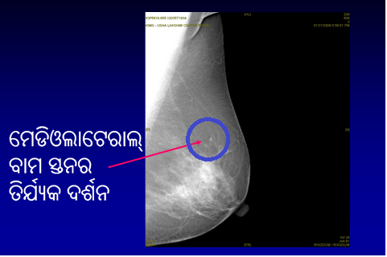

ମାମୋଗ୍ରାମ୍ କ’ଣ?
ଏକ ମାମୋଗ୍ରାମ (ସ୍ତନର ଏକ୍ସ୍ ରେ) ସେହି ମାନଙ୍କ କ୍ଷେତ୍ରରେ ହୁଏ ଯେଉଁ ମାନେ ସ୍ତନରେ ନିକଟରେ କିଛି ପରିବର୍ତ୍ତନ/ଏକ ସ୍ତନ ଗଣ୍ଠିର ସୂଚନା ପାଆନ୍ତି। ଜଣେ ବିଶେଷଜ୍ଞଙ୍କ ଦ୍ୱାରା କ୍ଲିନିକାଲ୍ ସ୍ତନ ପରୀକ୍ଷଣର ମିଶ୍ରଣ, ମାମୋଗ୍ରାମ୍ ଏବଂ ସ୍ତନ ଅଲ୍ଟ୍ରାସାଉଣ୍ଡ ସ୍ତନଭିତରେ ଏକ ଅସୁବିଧାକୁ ବାହାର/ଚିହ୍ନଟ କରିବାରେ ସାହାଯ୍ୟ କରିଥାଏ
ଡାକ୍ତରବାବୁ..ମୁଁ କୌଣସି ଗଣ୍ଠି ଅନୁଭବ କରିପାରୁନାହିଁ। ମୁଁ କାହିଁକି ଏକ ମାମୋଗ୍ରାମ୍ କରିବି?
ଏକ ସ୍କ୍ରିନିଂ ମାମୋଗ୍ରାମ୍ କ’ଣ?
ଯେତେବେଳେ ଜଣେ ମହିଳା ହୁଅନ୍ତୁ କିମ୍ବା ଡାକ୍ତର ସ୍ତନଭିତରେ ଏକଗଣ୍ଠିର ଅନୁଭବ କରିପାରିବେ ଏହି ମାମୋଗ୍ରାମ୍ (ସ୍ତନର ଏକ୍ସ୍ ରେ) ସ୍ତନ କର୍କଟର ଅସ୍ପୃଶ୍ୟ ଅବସ୍ଥା ଚିହ୍ନଟ କରିବାକୁ ଶେଷ ହୋଇଥାଏ। 40 ବର୍ଷ ବୟସରୁ ପ୍ରତିବର୍ଷ ଗୋଟିଏ ଥର ଏକ ସ୍କ୍ରିନିଂ ମାମୋଗ୍ରାମ୍ କରିବାକୁ ଏହା ଏକ ଉପଦ୍ଦେଶ ଅଟେ।
ମାମୋଗ୍ରାଫିର ରାସ୍ତା ଦ୍ୱାରା ସ୍ତନ ସ୍କ୍ରିନିଂ କରିବା ଦ୍ୱାରା ଆମେ ବହୁ ବର୍ଷରୁ ବୃଦ୍ଧି ହେଉଥିବା କର୍କଟରସ୍ତରକୁ ଅନୁମାନ କରିପାରୁ ଏବଂ ଏହା କେତେ ମାତ୍ରାରେ ପ୍ରଭାବ ପକାଉଅଛି ଏହା ତାହା ଦର୍ଶାଇଥାଏ। ଏଣୁ ସ୍ତନ କର୍କଟର ପ୍ରାଥମିକ ଅବସ୍ଥାରେ ଏହାର ସଫଳ ଉପଚାର କରିବାର ସମ୍ଭାବନା ଥାଏ, ଯାହାକି ଅସ୍ତିତ୍ୱତାରେ ବହୁ ସୁଧାର ଆଣିବାର ଅନୁବାଦ କରେ




ଏହି ସ୍ତନ କର୍କଟ ସ୍କ୍ରିନିଂ ସମସ୍ତ ବୟସର ବର୍ଗ ଉପରେ ପ୍ରଭାବ ପକାଇପାରେ କି?
ସାଧାରଣତଃ ‘ସ୍ତନ ଅବଗତ’ ପାଇଁ ସମସ୍ତ ବୟସର ମହିଳା ମାନଙ୍କ ଏହା ମହତ୍ତ୍ୱପୂର୍ଣ୍ଣ ଅଟେ, ଏହି ସ୍ତନ ସ୍କ୍ରିନିଂ କେବଳ 40 ବର୍ଷରୁ ଅଧିକ ବୟସର ମହିଳା ମାନଙ୍କଠାରେ ଅଧିକ ପ୍ରଭାବଶାଳୀ ଅଟେ।
ଏହା ଏକ ସୁରକ୍ଷିତ ମାମୋଗ୍ରାମ କରିବାକୁ ନିରାପଦକି? ଏହାର କାରଣ ବିକିରଣ ହାନିକାରକ ନୁହେଁ?
ଏହାର ଉଦ୍ଦେଶ୍ୟ ମାମୋଗ୍ରାମ୍ ଧାରଣ କରିବାକୁ ନିରାପଦ। ମାମୋଗ୍ରାଫି ଏକ କ୍ଷୁଦ୍ର ବିକିରଣରେ ଜଡିତ ଅଟେ – ଏହା ସ୍ୱାସ୍ଥ୍ୟ ପାଇଁ ହାନିକାରକ ନୁହେଁ। ଏକ ଦାନ୍ତ ଏକ୍ସ୍ ରେ ଗ୍ରହଣକରିବାର ସେହି ସମାନ ରୂପେ ମାମୋଗ୍ରାଫି କରିବା ସମୟରେ ଏହି ବିକିରଣ ବିତରଣ ହୋଇଥାଏ।
ଏହି ମାମୋଗ୍ରାଫି ଯନ୍ତ୍ରଣାଦାୟକ କି?
ସାଧାରଣଃ ମାମୋଗ୍ରାଫି କ୍ଷଣିକ ସମୟ ପାଇଁ ଚିନ୍ତା ଦେଇପାରେ, ଏହା ଯଦି ସଠିକ୍ ପ୍ରଶିକ୍ଷିତ ରାଡିଓଗ୍ରାଫର୍ଙ୍କ ଦ୍ୱାରା ଠିକ୍ ଭାବେ ସମାପ୍ତ ହୁଏ ଏହା କେବେବି ଯନ୍ତ୍ରଣାଦାୟକ ନୁହେଁ। ଡିଜିଟାଲ୍ ମାମୋଗ୍ରାଫି ସହିତ, ଅସୁବିଧା ମଧ୍ୟ କମ୍ ହୋଇଥାଏ
ଏକ ପରମ୍ପରାଗତ ମାମୋଗ୍ରାମ୍ ଏବଂ ଏକ ଡିଜିଟାଲ୍ ମାମୋଗ୍ରାମ୍ ମଧ୍ୟରେ ଭିନ୍ନତା କ’ଣ?
ସମ୍ପୂର୍ଣ୍ଣ କ୍ଷେତ୍ରର ମାମୋଗ୍ରାଫି ପାଞ୍ଚ ସେକେଣ୍ଡ (ଏକ ପରମ୍ପରାଗତ ମାମୋଗ୍ରାମ୍ ସହିତ ଚାରି ରୁ ପାଞ୍ଚ ମିନିଟ୍ ତୁଳନା କରାଯାଇଛି) ମଧ୍ୟରେ ଯାହାକି ସ୍ତନର ଛବିକୁ ପ୍ରଯୋଜିତ କରିପାରେ। ଏହି ନୂତନ କୌଶଳ ସ୍ତନ କର୍କଟ ପରିବର୍ତ୍ତନ ଗୁଡିକର ଦୃତ ସ୍ତରଗୁଡିକର ବୃଦ୍ଧିକୁ ଦର୍ଶାଇବାରେ ଏକ ଷ୍ଟାଣ୍ଡାର୍ଡ ମାମୋଗ୍ରାଫି ଠାରୁ ଆହୁରି ଏହା ଅଧିକ ପ୍ରଭାବଶାଳୀ ଏବଂ ବିଶେଷଭାବେ ଯବାନ୍ ମହିଳା ମାନଙ୍କ ସ୍ତନମାନଙ୍କ ଠାରେ ଏହା ବ୍ୟବହୃତ। ଅନ୍ୟାନ୍ୟ ଲାଭଗୁଡିକ କମ୍ ସୁବିଧା ଦିଏ ଏବଂ ପରମ୍ପରାଗତ ମାମୋଗ୍ରାମ୍ ସହିତ ବିକିରଣଗତ ହାନିର ତୁଳନା ହୋଇଥାଏ ଏବଂ ଉପରେ ଅଧିକରୁ ଅଧିକ ସଠିକତା ପ୍ରଦାନ କରାଯାଇଛି।
ସେ ଯାହା ହେଉ, ଟେଲି ମେଡିସିନ୍ ସୁବିଧାର ଉପଲବ୍ଧତା ସହିତ, ଡିଜିଟାଲ୍ ଛବି ଗୁଡିକ ବିଶ୍ୱର ଯେକୌଣସି ସ୍ଥାନକୁ ଗୋଟିଏ ସେକେଣ୍ଡର ମତ ପାଇଁ ପ୍ରେରଣ କରାଯାଇପାରେ। ଏହି ରୂପେ ମେସିନ୍ ବହୁ ମୂଲ୍ୟ ଅଟେ, ପୂର୍ଣ୍ଣ କ୍ଷେତ୍ରର ଡିଜିଟାଲ୍ ମାମୋଗ୍ରାଫି ଭାରତରେ ସବୁସ୍ଥାନରେ ଉପଲବ୍ଧ ନାହିଁ।
ସ୍ତନ କର୍କଟ ଚିହ୍ନଟ କରିବାରେ ଏହି ମାମୋଗ୍ରାଫି 100% ସଠିକ୍ଅଟେ କି?
ମାମୋଗ୍ରାମ୍ ଗୁଡିକ ଶୀଘ୍ର ସ୍ତନ କର୍କଟ ଚିହ୍ନତ କରିବାର ଏକ ନିଶ୍ଚିତ କାରିଗରୀ ପ୍ରକ୍ରିୟା ଅଟେ। ଅନ୍ୟାନ୍ୟ ସ୍କ୍ରିନିଂ ପରୀକ୍ଷାଗୁଡିକ ପରି, ସେଗୁଡିକ ଠିକ୍ ନୁହେଁ। ଏହି ମାମୋଗ୍ରାଫିର ଆକ୍ୟୁରାସି ପାଖାପାଖି 85% ଅଟେ। କାରଣଗୁଡିକ ହେଲା:
ସ୍ତନର ଏମ୍ଆର୍ଆଇ କରିବା ପାଇଁ ଭୂମିକା କ’ଣ?
ସ୍ତନ ଏମ୍ଆର୍ଆଇ ସ୍ତନ ସ୍କ୍ରିନିଂ ରୁଟିନ୍ ପାଇଁ କିମ୍ବା ପ୍ରତ୍ୟେକଟି ରୋଗୀ ସହିତ ସ୍ତନ କର୍କଟ ର ମୂଲ୍ୟାଙ୍କନ ଭିତରେ ନିର୍ଦ୍ଧିଷ୍ଟ ନୁହେଁ।
ସେ ଯାହାହେଉ ନା’କାହିଁକି, କିଛି ବିଶେଷ ପରିସ୍ଥିତି ଗୁଡିକରେ ଏହା ବହୁ ଗୁରୁତ୍ତ୍ୱପୂର୍ଣ୍ଣ ଅଟେ: